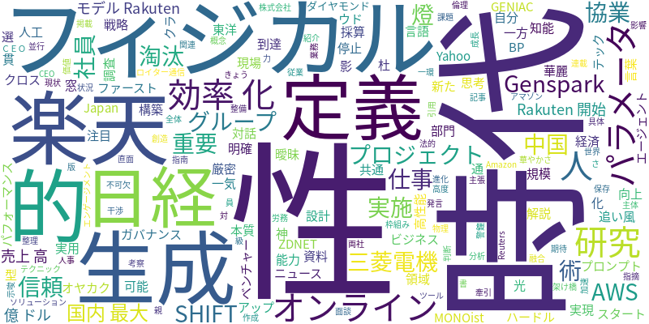

☁️ 今日のトレンドワード

📰 今日のピックアップニュース (10件)
楽天、国内最大級AIモデル「Rakuten AI 3.0」提供開始
楽天グループは、AI開発プロジェクト「GENIACプロジェクト」で開発した国内最大規模の高性能AIモデル「Rakuten AI 3.0」の提供を開始しました。これにより、楽天グループ全体のサービス向上や新たな価値創造を目指します。
生成AI活用術：Gensparkで仕事効率化
ビジネス+ITは、生成AIツール「Genspark」を活用した仕事術を紹介。調査から資料作成までを一気通貫で行える「神プロンプト7選」を掲載し、業務効率化に役立つ具体的なテクニックを解説します。
「AI」の定義は曖昧？
日経クロステックは、「人工知能（AI）」という言葉に明確で厳密な定義がないことを指摘。時代とともに進化するAIの概念が、その定義の曖昧さに影響を与えている可能性について考察します。
AIが牽引、AWS売上高6000億ドルへ
ロイター通信によると、Amazonのクラウド部門（AWS）のCEOは、AIの追い風を受けて売上高が6000億ドルに到達する可能性があると発言しました。AI関連サービスがAWSの成長を加速させていることを示唆しています。
AI時代に不可欠な「信頼できるAI」
Yahoo!ニュースは、窓の杜の記事を引用し、“AIファースト”な時代において「信頼できるAI」を実現するためのAIガバナンス構築の重要性を説いています。技術開発と並行した倫理的・法的な枠組みの整備が求められます。
三菱電機と燈、フィジカルAIで協業
ZDNET Japanは、三菱電機とAIベンチャーの燈が、「フィジカルAI」領域における協業戦略を発表したことを報じています。両社は、AIと物理的な世界を融合させた新たなソリューション開発を目指します。
中国フィジカルAI：華やかさと課題
東洋経済オンラインは、中国の「フィジカルAI」スタートアップの現状を分析。華麗なパフォーマンスで注目を集める一方で、実用性や採算性といった高いハードルに直面している状況を「光と影」として報じています。
AIと研究開発の架け橋
MONOistは、AIと研究開発をつなぐ「共通言語」の重要性を論じています。現場のパラメータから本質的なパラメータ設計へと進むことで、AIを活用した研究開発の効率化と高度化が期待できると解説しています。
SHIFT、AIが社員と1on1実施
日経BPは、SHIFTが生成AIを活用し、社員と1on1（1対1の面談）を実施する対話型AIエージェントを開発したことを報じています。これにより、人事労務の効率化や従業員エンゲージメント向上を目指します。
AI時代に淘汰されるのは？
ダイヤモンド・オンラインは、親による過干渉（オヤカク）がもたらす「思考停止」に警鐘を鳴らし、AI時代に淘汰されるのは能力の低い人ではなく「自分で決めない人」であると主張。主体的に判断する力の重要性を説いています。
今日のAI・テック業界は、国内最大級AIモデルの登場から、AI活用による業務効率化、そしてAIの定義の曖昧さまで、多岐にわたる動きが見られます。楽天の「Rakuten AI 3.0」提供開始は、国産AIの性能向上と普及を加速させる可能性を秘めています。一方、Gensparkのような生成AIツールの具体的な活用術や、AIガバナンスの構築といった「信頼できるAI」への取り組みも重要視されています。また、AIがクラウド事業の売上を牽引するAmazonの事例や、三菱電機と燈による「フィジカルAI」への進出、中国スタートアップの光と影など、AIと現実世界との融合も進んでいます。研究開発におけるAIの役割、さらにはAI時代に求められる「自分で決める力」といった、AIがもたらす社会構造や個人のあり方への影響も示唆されており、AI技術の進化と社会実装のバランスが問われる一日となりました。